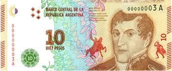

L’Argentine est un vaste pays d’Amérique du Sud connu pour la diversité de ses paysages, sa culture vibrante et sa passion du football. De la cordillère des Andes aux plages atlantiques, en passant par les plaines fertiles de la pampa et les glaciers de Patagonie, elle offre une richesse naturelle et culturelle unique. Sa capitale, Buenos Aires, est célèbre pour son ambiance cosmopolite, sa musique du tango et sa gastronomie raffinée.
L’Argentine se situe dans l’hémisphère sud et occidental, entre le 22° et le 55° parallèle sud.
Frontières : Chili (ouest), Bolivie et Paraguay (nord), Brésil et Uruguay (nord-est), Océan Atlantique (est).
Superficie : environ 2,78 millions de km², ce qui en fait le 2ᵉ plus grand pays d’Amérique du Sud.
La capitale est Buenos Aires et les grandes villes sont Córdoba, Rosario et Mendoza.
Infos clés
Devise
En unión y libertad
Population
~46 millions d'habitants
Densité
~16 Hab/Km²
Drapeau
Hymne national
Monnaie

Billet de 10 pessos argentin
dates clés
Cliquez sur une date pour découvrir un événement clé de l'histoire argentine.